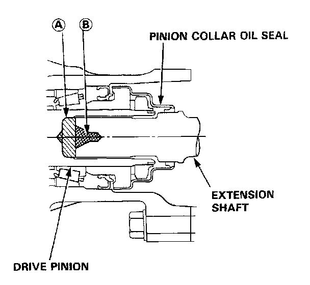
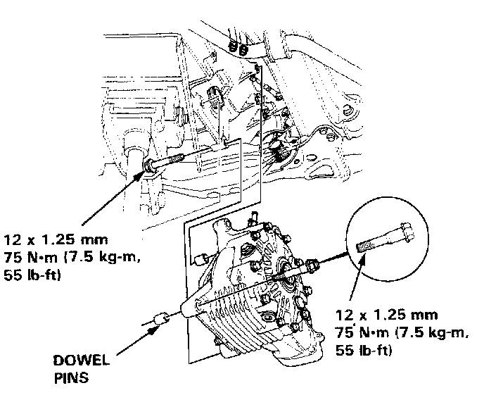
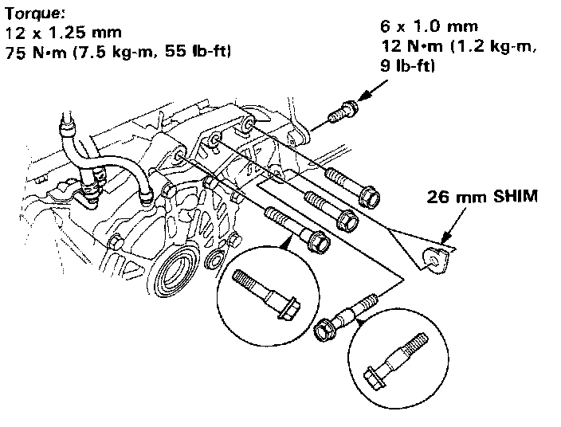
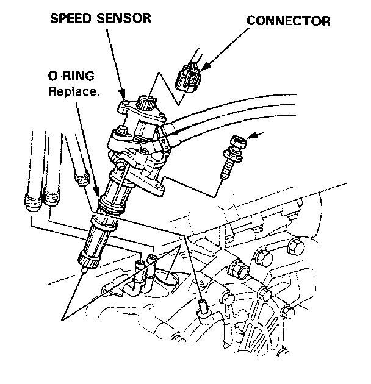
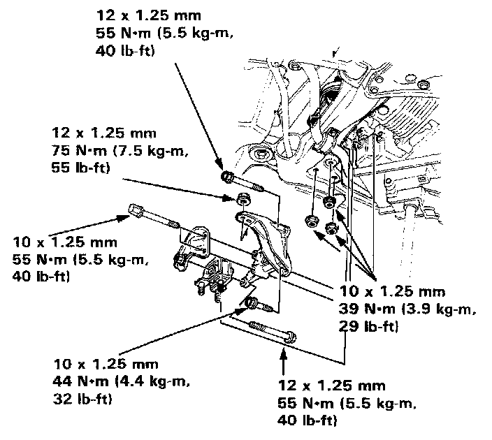
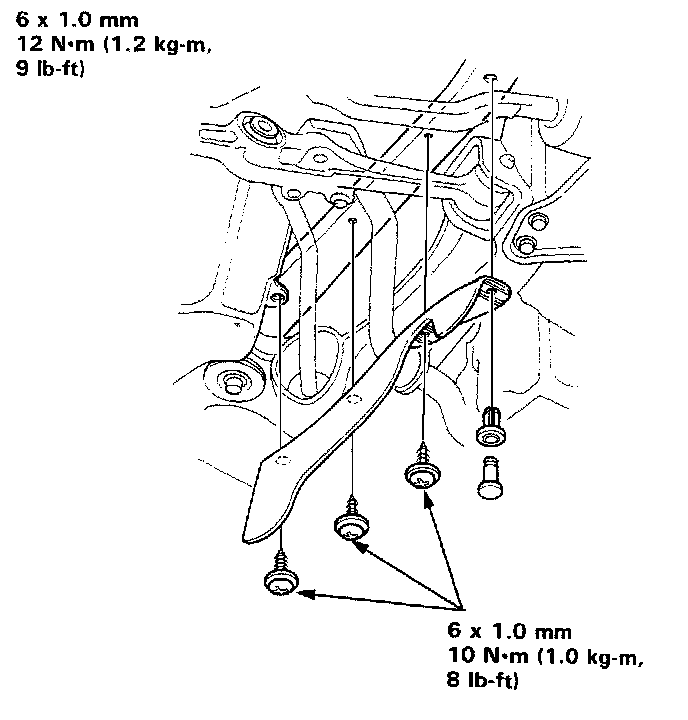
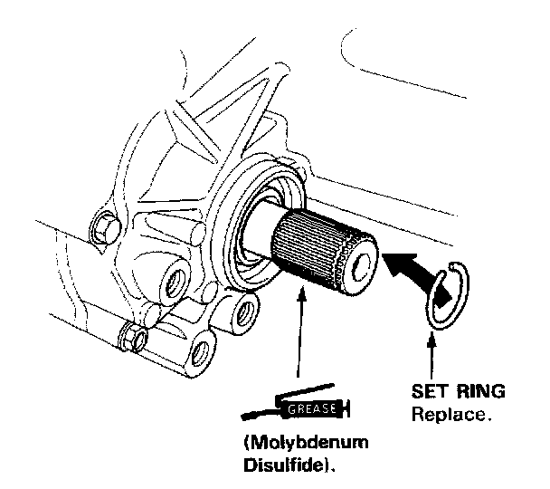
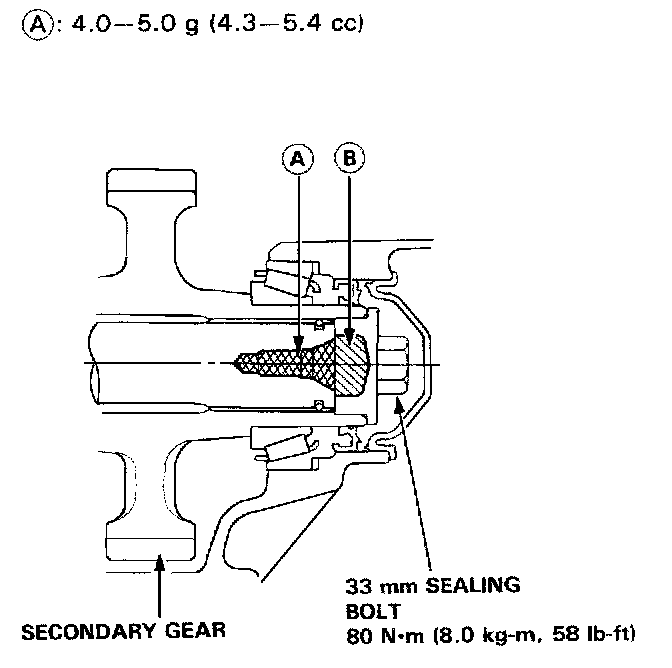
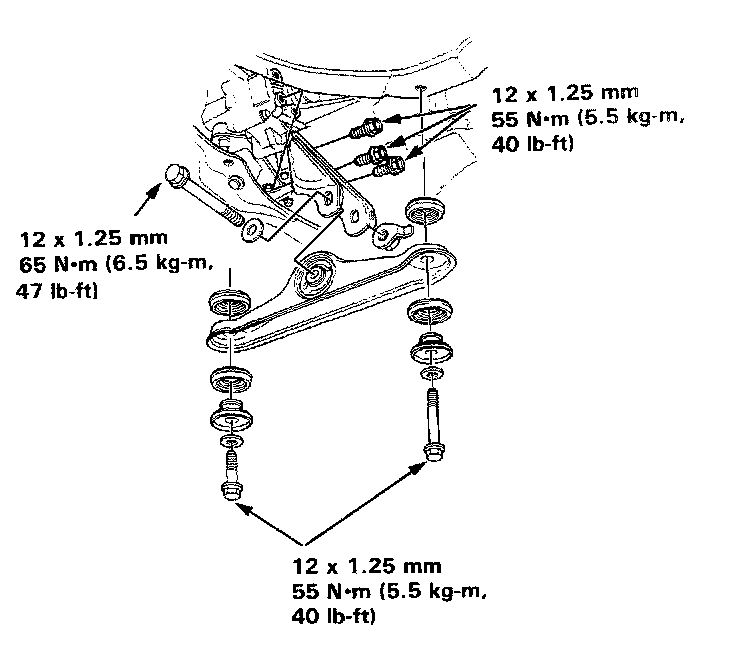

Installation
1. Fill the extension shaft with Super High Temp Grease (P/N 08798-9002).
2. Fill the drive pinion with Super High Temp Grease (P/N 08798-9002) as follows:
If pinion collar oil seal is replaced:
(A): 19 - 20g (20.4 - 21.5cc)
If pinion collar oil seal is not replaced:
(A): 3.5 - 4.5 g (3.7 - 4.8cc)

3. Install the dowel pins and differential assembly.

4. Install the mounting bolts and 26mm shim, then connect the oil cooler hoses and breather tube.

5. Install the speed sensor, then connect the hoses and breather tube.

6. Install the L. front engine mount bracket, front stopper insulator rubber and front engine bracket A.

7. Install the splash guard.

8. Apply Super High Temp Grease (P/N 08798-9002) to the extension shaft splines.
9. Set the extension shaft to the transmission then install the set ring.
10. Shift to low gear to lock the secondary gear.
11. Apply liquid gasket (P/N 08718-0001) to the threads and fill the secondary gear and extension shaft with High Temp Grease (P/N 08798-9002).

12. Install the 33mm sealing bolt and secondary cover.

13. Install the transmission mount bracket and transmission mount beam.
14. Install the driveshafts and intermediate shaft.
15. Refill the differential with oil.
16. Refill the cooling system.
17. Install the air cleaner case.
18. Connect the battery positive (+) and negative (-) cables to the battery.
19. Shift the transmission and check for smooth operation.